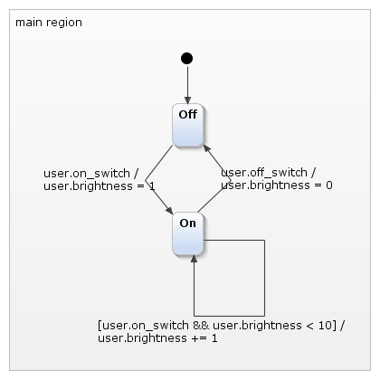
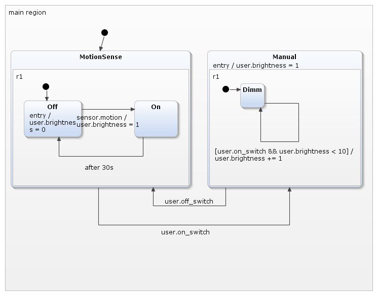
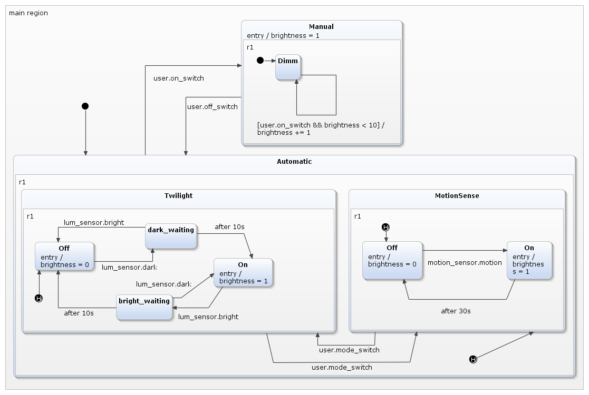
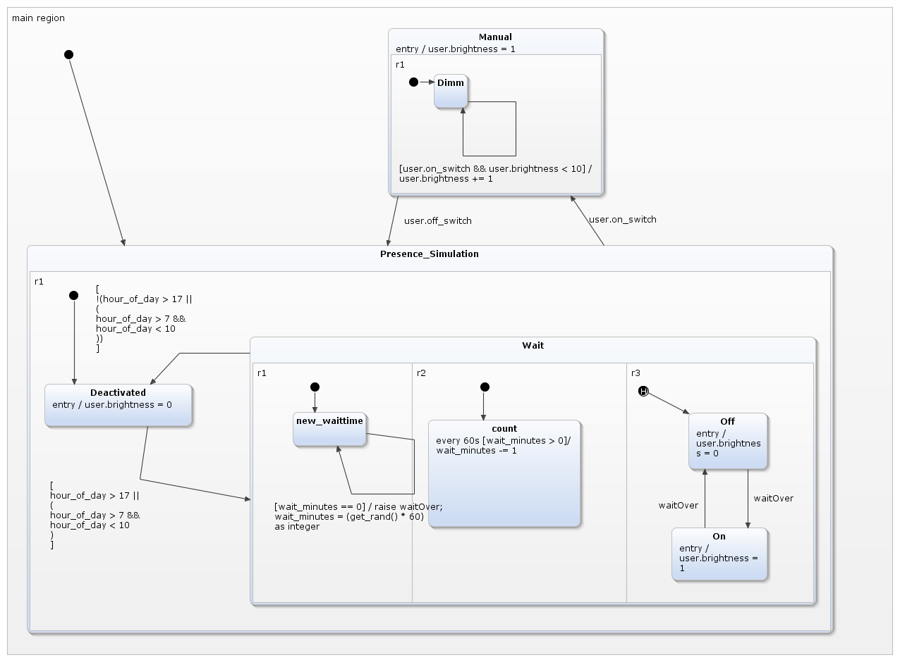

This statechart can be simulated, but the "Internal"-interface does not allow to use it with Code in a useful way.
This statechart can be simulated, but the "Internal"-interface does not allow to use it with Code in a useful way.A Series of examples that demonstrates multiple features of YAKINDU SCT. With each iteration, more features are shown. This example is a good starting point to dive into SCT head-first.
The most basic way to model a light switch. When the "operate"-event is raised, it changes between the "On"- and the "Off"-state, using an "Internal"-Interface.
This statechart can be simulated, but the "Internal"-interface does not allow to use it with Code in a useful way.
To use the statechart from code, you need an interface to it. This version has an interface named "user", so "user.operate" can be raised. YAKINDU SCT does not generate methods to
interact with objects belonging to the "Internal"-Interface.

While the classic theory of input-output-automatons is only aware of events, Harel's statecharts and YAKINDU SCT have many more features - including variables.
With these, you can model a dimmer.

When the user operates the 'On'-button the first time, the light is switched on, with the brightness level set to 1. On further operations of the button, the brightness increases up to a value of 10.
Operating the 'off'-button switches off the light. The dimmer will not remember the brightness level and restart with a brightness of 1. You can see how the variable can both be manipulated and
used as a guard for transitions.
Composite states are another feature of YAKINDU SCT. With these, you can create a state that contains one or more other states. The main advantages are a better clarity of the statechart and the possibility to create exit transitions from everywhere in the composite state. Without the composite state, you would need one more transition: Both states in "MotionSense" would have a transition with "user.on_switch" to the "Manual" "Dimm"-state. 
This example should clarify how history states work, what they do, and especially what they don't do. We introduce another mode, twilight / luminosity control, for our lightswitch, that starts to change into a whole light control module.
You can see that the statechart contains three "shallow history" states.

So, what do these history states do? There is one in "Twilight", one in "MotionSense", and one in the whole "Automatic" composite state.
A shallow history state, contained in a composite state with a set of possible states inside that composite state, remembers which of these states was last active when that composite state is left.
The one in "Automatic" remembers if "Twilight" or "MotionSense" was active when "Automatic" is left, but not what was active inside these two. On re-entry, the history state would activate either "Twilight" or "MotionSense",
but these would start on their respective entry-states. This is why there is a history state in these as well.
If you have worked with history states before, you might now be inclined to say "A deep history state would have been the correct thing here". You would only be partially right - on first glance, yes. A deep history state remembers the active state in his region and everything that was active inside of this state, and so on, down to the lowest level. We might spare the two shallow history states in "Twilight" and "MotionSense". But this would not act the same - a history state is only activated when the region where it is contained in is actually left. Using one deep history state would not allow us to remember the active state in "MotionSense" when we switch to "Twilight" and vice versa, without leaving the whole "Automatic" composite state, because this transition would not activate the deep history.
This final version of the light switch, that has become a light computer, adds a presence simulation. The motion detection and the twilight detection are left out for clarity.
The presence simulation is activated on certain hours of the day (from 6 PM to midnight and 8 AM to 10 AM) and switches the light on and off repeatedly in random intervals.
To implement this functionality, we finally hit the limits of the statechart - there is neither a function for random values, nor one for the current date / time. YAKINDU SCT allows you to implement your own
methods, called "operation", to overcome these limits. These are then called from the statechart itself, so you don't have to care about when (and how) they will be called. You can receive arguments from the statechart
and return values, exactly like a normal function.
